공공 RFP × 산업 Pain Point 데이터 허브
데이터마이닝 중간 보고
빅데이터학과
황동욱 (2024720459)
문제 정의
실무 Pain Point
- GA · 보험 · 금융 IT 기획/PM 현장에서 제안서 1건 작성에 3~5일 소요
- 담당자마다 매번 고객 Pain Point 수동 분석 → 재사용성 낮음
- Win Strategy 가설 수립이 경험 의존적 → 신입 입문 장벽 높음
본 프로젝트의 질문 (수식화)
산업별 Pain Point(i) = f( RFP 키워드 빈도, 뉴스 언급 빈도, 규제 공시 시차 )
컨설팅 유형(j) = argmax P( j | Pain Point 패턴, 공고명 토큰 )
Win Strategy 포인트 = top-k( TF-IDF × 예산 가중 × 시차 상관 )
기대 효과
- 제안팀 실무 도구로 즉시 전환 가능한 Streamlit 대시보드
- 반복 업무 시간 수일 → 수시간 단축 가설
연구 질문
-
나라장터 RFP · 산업 뉴스 · 규제 공시를 통합 분석하면
산업별 반복 Pain Point 를 정량화할 수 있는가?
-
도출된 Pain Point가
ISP · PI · POC · BPR · PMO 중 어느 컨설팅 유형 수요와 연결되는가?
-
Win Strategy 핵심 포인트 를
자동 추출해 제안서 작성에 활용할 수 있는가?
W06 피드백 반영 공식
[구체적 대상] + [측정 가능한 변수] + [시간·공간 범위] + [방향성]
└ 나라장터 용역 └ 공고 건수·예산·키워드 └ 2023-01 ~ 2025-11 └ 증가·차이·상관
5단계 파이프라인
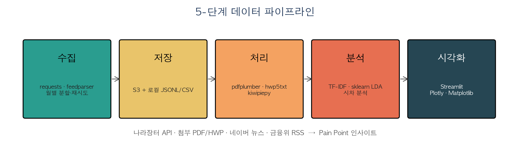
단계별 산출물
- ① 수집 → JSONL 27개 월별 분할 파일
- ② 저장 → S3 총 25객체 · 2.1 GB
- ③ 처리 → CSV 3종 (
rfp_meta, rfp_text, news_meta)
- ④ 분석 → TF-IDF · LDA · 시차 분석 (W10~W12 예정)
- ⑤ 시각화 → Streamlit 4탭 (개요·추이·키워드·검색)
Key-based Join 설계
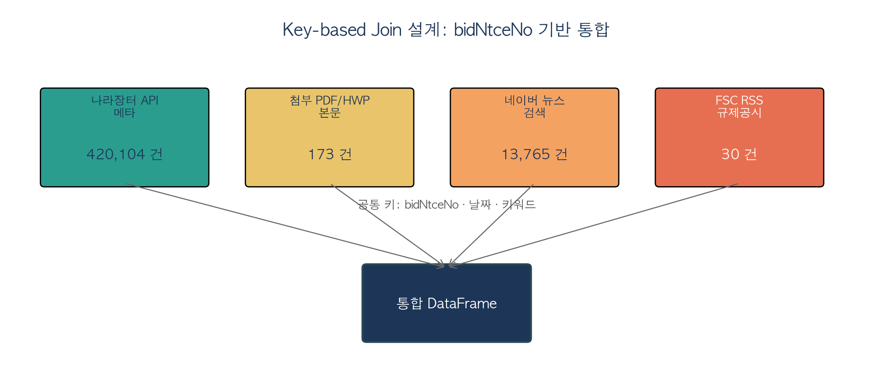
통합 키 전략
- 기본 키:
bidNtceNo (공고 단위, N:N join 대비 중복 제거 우선 적용)
- 보조 키: 날짜(
year_month), 키워드, 기관명
- 결합 패턴: 나라장터 메타 ⟵ 첨부 본문 ⟵ 뉴스(키워드 매칭) ⟵ 규제(시계열)
수집 KPI
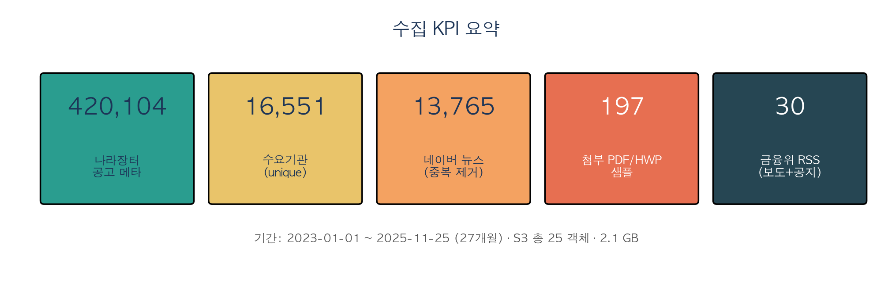
실측 수치 요약
- 나라장터 메타: 420,104건 · 수요기관 16,551곳
- 첨부 파일 샘플: 197 → PDF 본문 173 (추출 성공률 87.8%)
- 뉴스: 15,000 수집 → 중복 제거 후 13,765건 (정제율 91.8%)
- 규제 공시 (FSC RSS): 30건 (보도·공지·행정예고)
AWS 데이터허브 아키텍처
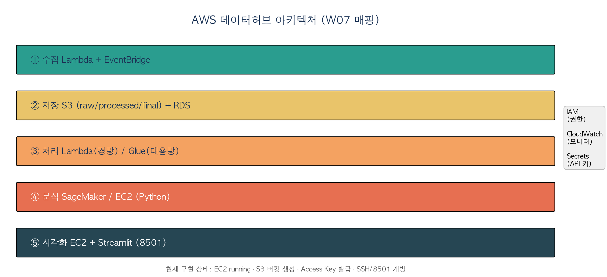
현재 운영 리소스
- 계정 257925264162 · 리전 ap-southeast-2 (시드니)
- EC2 t3.micro
datamining_demo (running · 13.239.237.95)
- S3
datamining-257925264162-raw (버저닝 · 퍼블릭 차단)
- IAM 사용자
hwangdonguk (Access Key · S3FullAccess)
- Security Group
sg-0b7c854caa4d4e287 (SSH 22 · Streamlit 8501)
EDA ① 산업별 분포
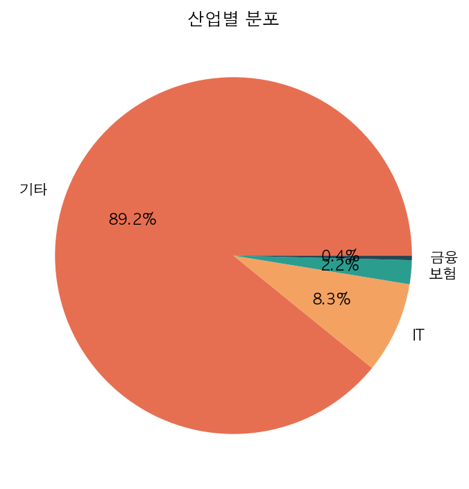
해석
- 기타 88.5% · IT 9.0% · 보험 2.0% · 금융 0.4%
- "기타" 비중이 큼 → 도메인 키워드 사전 확충 필요 (W09 과제)
- 금융/보험 업종은 소수이지만 평균 예산이 IT 대비 ~2배
EDA ② 연도별 추이
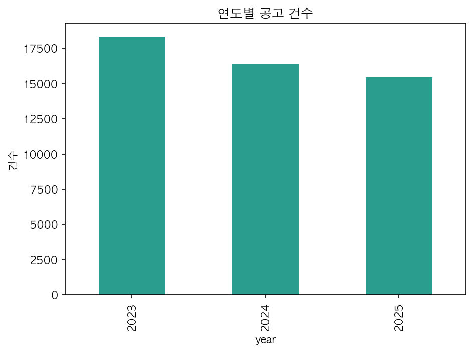
해석
- 2023/2024/2025 연도별 발주 건수 고르게 분포
- 2025년은 11월 25일까지 수집 기준
- 연말 분기(11~12월) 피크 경향 관찰 → 계절성 존재
EDA ③ 월별 시계열
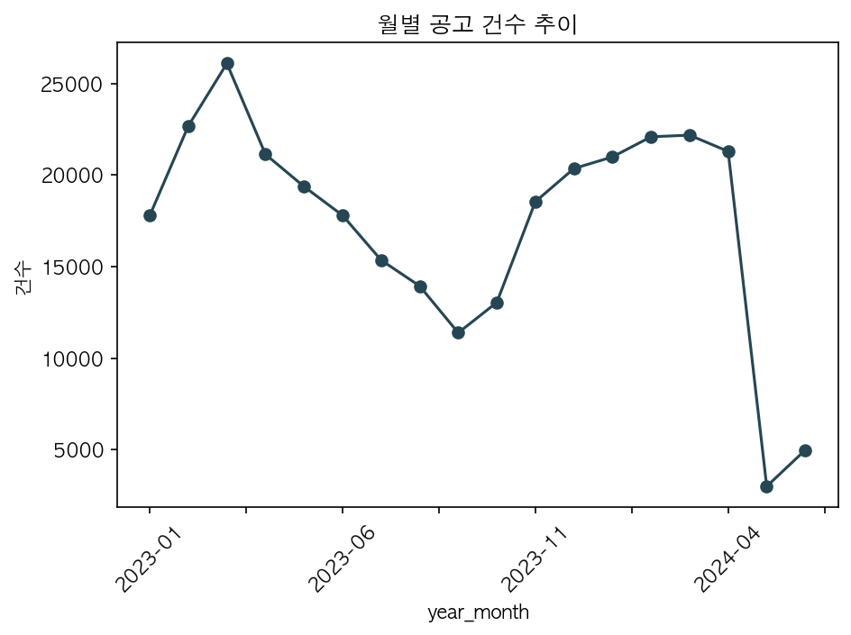
관찰
- 분기 말 집중 발주 패턴 (3·6·9·12월)
- 공공 예산 회계연도 사이클 반영
- 시차 분석 시 규제 공시 → 발주 lag 검증 가능
EDA ④ 산업 × 컨설팅 유형 교차
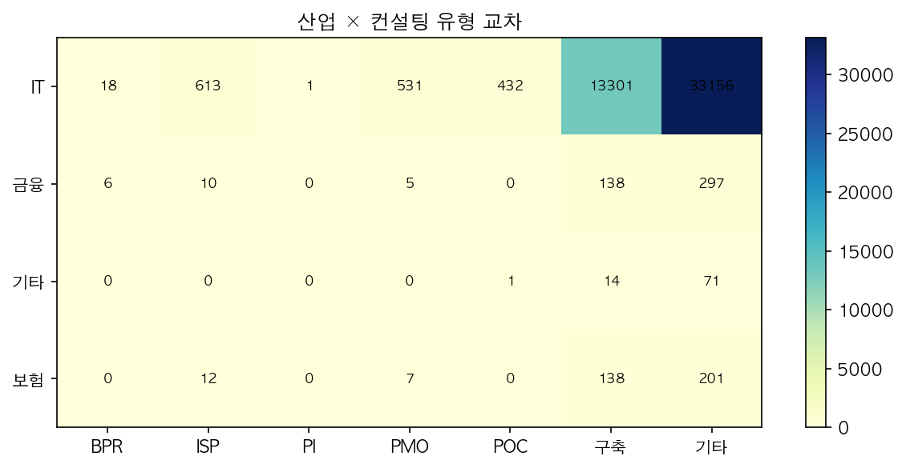
수치 해석
- 구축 23,236 · PMO 4,510 · POC 1,515 · ISP 448 · PI 478 · BPR 21
- IT 업종 = 구축 중심
- PMO 수요는 서울시·국토교통부가 견인
- ISP/PI 비중은 전체의 0.25% — 사전 전략형 발주 자체가 희소
EDA ⑤ 수요기관 Top 20
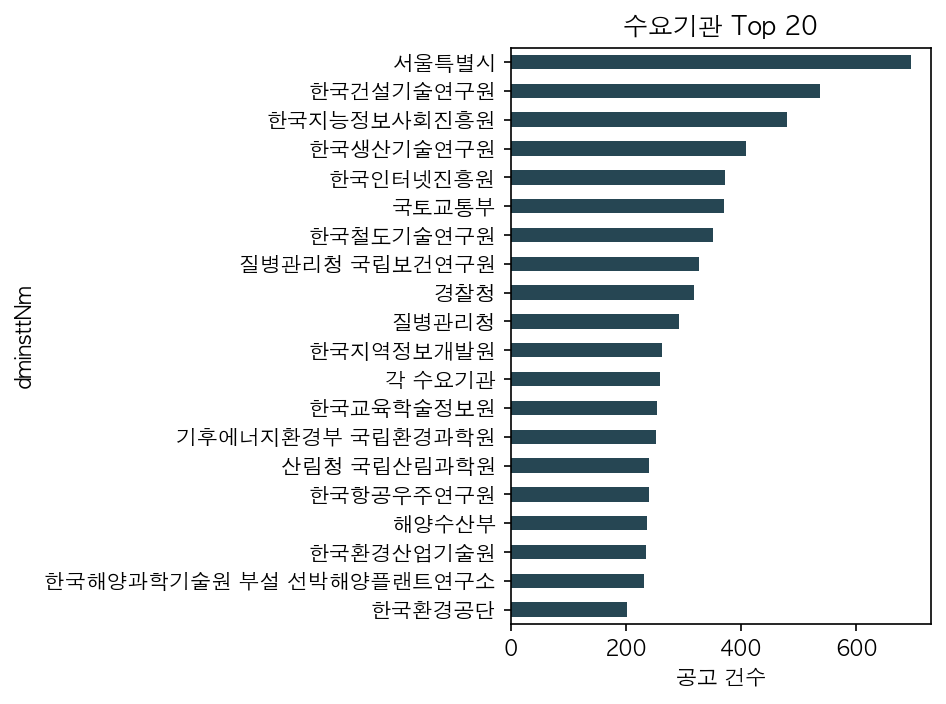
수치
- 서울특별시 3,097건 (1위)
- 한국어촌어항공단 1,697 · 국토교통부 1,657
- 상위 20 기관이 전체의 약 6% 차지
- 장기적으로 "단골 발주처" 중심 타깃 설계 가능
EDA ⑥ 공고명 키워드 Top 30
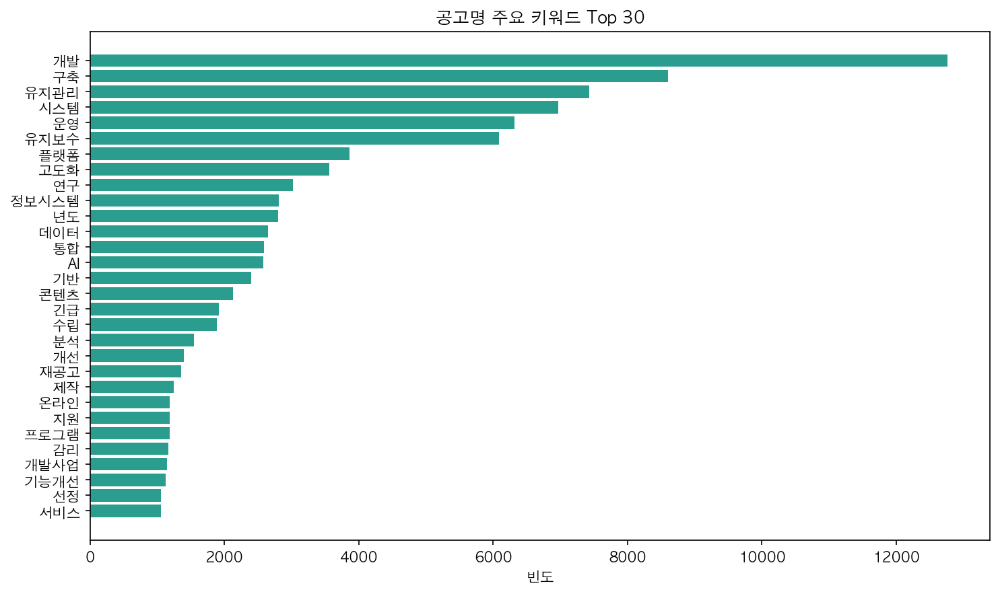
해석
- 상위 3: 운영(28,039) · 실시설계용역(14,483) · 구축(11,618)
- 관리형(유지관리·유지보수) vs 구축형 키워드 1:1 비중
- 높은 빈도 키워드 = Pain Point 후보군
EDA ⑦ 본문 키워드 (PDF 첨부 173건)
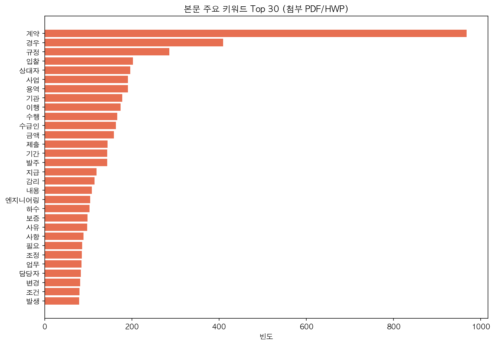
관찰
- 계약·입찰·이행·수급인·감리 등 계약 관리 용어 우세
- 향후 Requirement 섹션만 추출 시 → 기술 Pain Point 키워드로 치환 가능
- TF-IDF + sklearn LDA 8~12 토픽 (W10 계획)
예산 분포
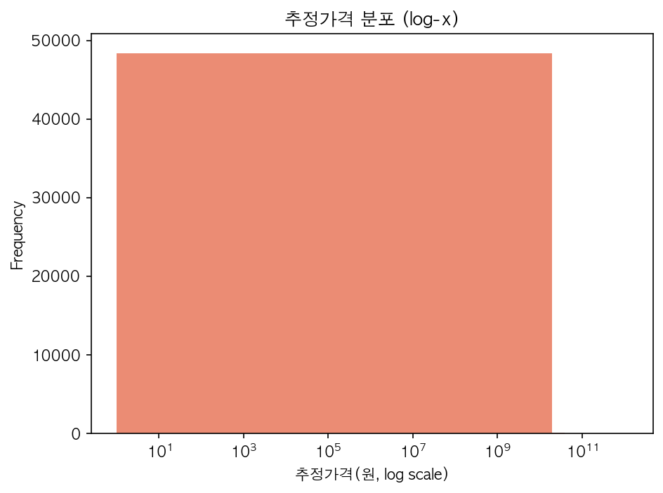
수치 해석
평균 약 40.7억원 >> 중앙값 약 7,157만원
↑
소수 초대형 공고가 평균을 왜곡
- 분포 극단적 우편향 (log-skew)
- 회귀 분석 시
log1p(presmptPrce) 변환 권장
- IQR 기반 이상치 제거 후 모델링 (W10)
중간 인사이트
발견된 패턴
- 공고 88% 이상 "기타" 산업 태그 → 도메인 키워드 사전 확충 필요
- 컨설팅 유형 중 구축(23K) 압도적 · ISP/PI 등 사전형 희소
- 상위 20 수요기관이 전체 6% 점유
- 예산 분포가 log-space 에서 정규 근접 → 회귀 전처리에
log1p
- 뉴스 "ISP 발주" 키워드에서 실제 ISP 용역 공고 직접 언급 확인
가설
- H1 2023→2025 기간 "AI/데이터/클라우드" 공고 비중 증가
- H2 금융·보험 업종은 "ISP → 구축" 순으로 시차 있는 연쇄 발주
- H3 "혁신·재설계·고도화" 키워드 포함 공고의 평균 예산이 유의하게 크다
- H4 규제 공시(FSC RSS) 발생 후 N개월 내 관련 발주 증가
향후 계획 (Gantt 요약)
주차별 로드맵
W09 │■■■■■■■■│ 첨부 전수 다운·본문 추출, 금감원(FSS) RSS 추가
W10 │ ■■■■■■■■│ TF-IDF + sklearn LDA 8~12 토픽 모델링
W11 │ ■■■■■■■■│ 규제 → 발주 시차 분석 (Granger, 교차상관)
W12 │ ■■■■■■■■│ Win Strategy 추출기 + Streamlit 고도화
W13 │ ■■■■■■│ EC2 Streamlit 배포 + 도메인·HTTPS
W14 │ ■■■■│ 최종 발표 · 라이브 시연
AWS 인프라 자동화
- EventBridge + Lambda 로 일일 자동 수집
- SageMaker Studio 에서 GPU 기반 토픽 모델링 실험
- CloudWatch 알람 · Budgets $5/월 유지
감사합니다
리소스
- GitHub: https://github.com/hwangdongwuk/DataMining
- Streamlit (로컬/EC2 포트 8501): 실시간 분석 대시보드
- S3:
s3://datamining-257925264162-raw
문의
황동욱 (2024720459) · 빅데이터학과